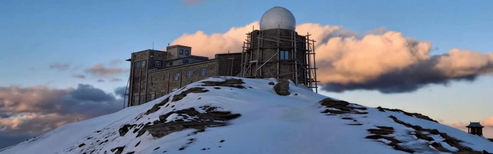
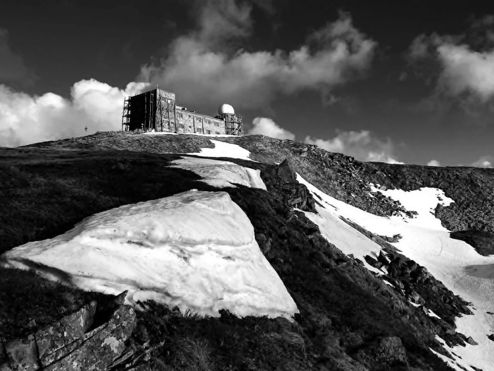
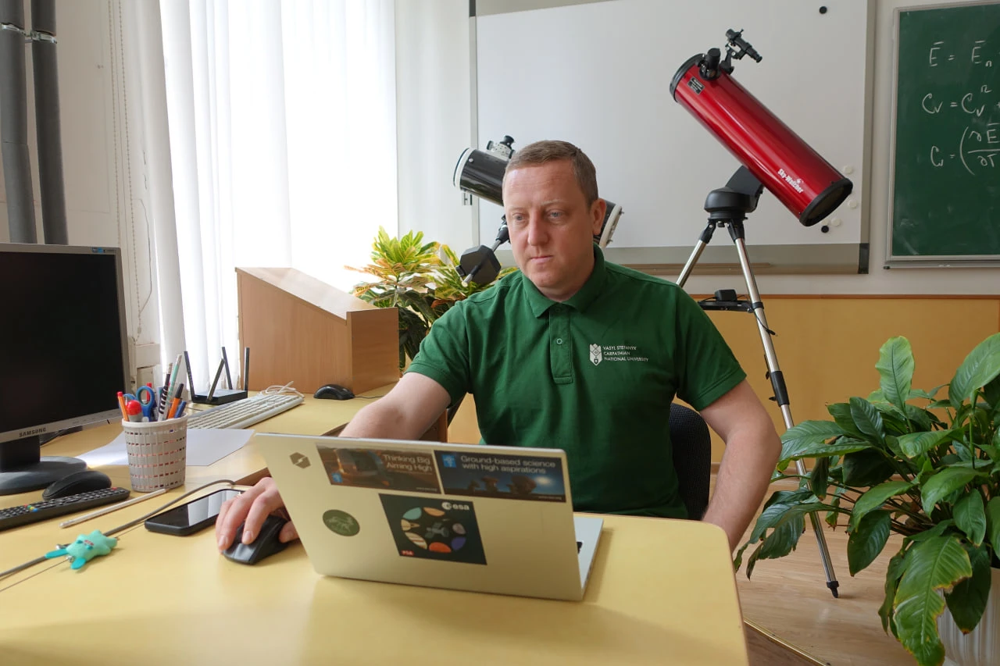
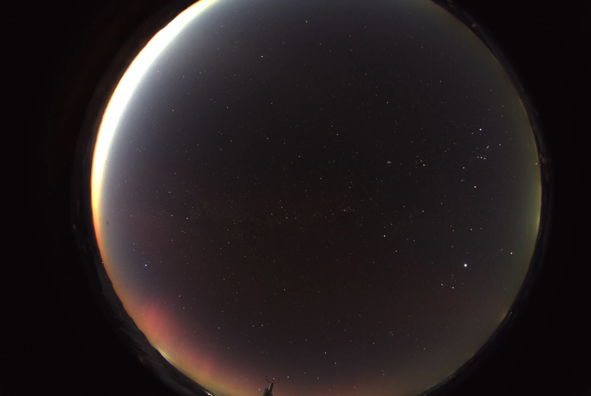
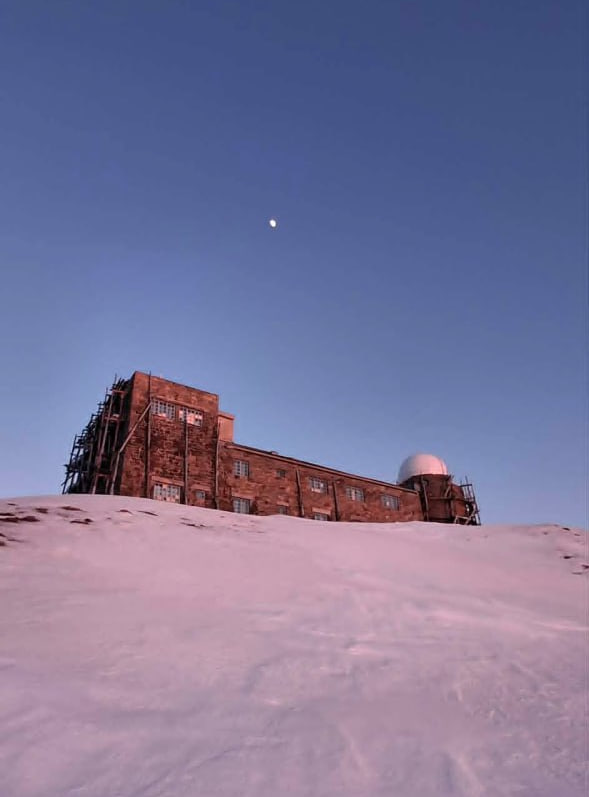
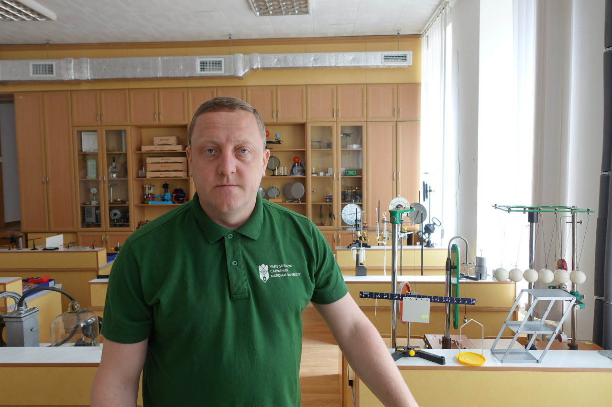

Closer to Space: How the Chornohora Observatory restarts its operation
29.06.26
Tourists know the observatory on Mount Pip Ivan pretty well. For a long time, these were picturesque ruins, covered in snow in winter — remnants of man-made architecture amidst the wilderness. But this year, at the end of summer, the renovated institution that will conduct proper research on space is planned to launch. We spoke to Ihor Tsependa, the Head of the Academic Council of the Vasyl Stefanyk Carpathian National University (CNU) in Ivano-Frankivsk, and Volodymyr Troyanskyi, the Director of the Astronomical Research Station of the “Observatory” International Research Center of the CNU and the University of Warsaw, about the restart of the spot.
The observatory, located on the third-highest peak of the Ukrainian Carpathians (2028 meters), was put into operation in July, 1938. It had 5 floors, 43 rooms, and a rotunda with an astrograph¹.
At the time, this was Polish territory, so the observatory was named after Józef Piłsudski² and placed under the control of the University of Warsaw, which conducted research there.
Ihor Tsependa notes that building the observatory was a major logistical challenge, and a rather expensive one: “It took a million zloty to build it. It’s over 3.5 million euros in today’s money. Transportation took the lion’s share. If below, a sack of cement cost two zloty, up on the mountain it cost six”.

The high-altitude location is justified for astronomical observations, Volodymyr Troyanskyi says: “It’s important to avoid light pollution from big cities. It’s absent in the Carpathians. The less environmental light, the better the picture of space. The second factor is that the higher the observatory is located, the thinner the atmospheric layer the light from a particular object has to pass through. It also enhances the image”.
In 1938, Pip Ivan was located on the border between Poland and Czechoslovakia. A border outpost was here, but on September 1, 1939, World War II broke out. The observatory wasn’t properly operating for even a year, and most of the research was destroyed.
“The research methodology described in the Polish magazine Acta Astronomica is all that remains; the data perished,” Volodymyr comments. “We are now used to digital data, but at that time, the photographs of the starry sky were made on astroplates — glass plates covered with photosensitive emulsion. They were lost in World War II.”
Without maintenance and in harsh climate conditions, the observatory quickly turned into ruin, and Soviet authorities decided not to restore it because there were other research centers. The idea to reconstruct it surfaced again after Ukraine gained independence.
“In the 1990s, the administration of the Ivano-Frankivsk region planned to organize a tourist site here,” Ihor remembers. “Instead, since 2007, our university, together with the University of Warsaw, has started developing a concept for renewal of the science and research center. Given that the observatory is located in the Carpathian National Natural Park, we have proposed to conduct astronomical, meteorological, and ecological research here.”

The launch of the science and research center was planned for earlier, but the COVID-19 pandemic and then the full-scale invasion became major obstacles. The war has made the need for a new Ukrainian observatory more acute:
“Many telescopes were located in Crimea, and in 2014, we lost access to them,” Volodymyr counts the losses caused by the war. “The Main Astronomical Observatory of the National Academy of Sciences of Ukraine also had telescopes in Terskol, in Kabardino-Balkaria (in the Russian Caucasus — transl.). Before 2022, they managed to get data from there somehow, but with the full-scale invasion, we lost access there as well. Odesa and Mykolaiv Observatories were targeted by Russian attacks, and the Chuhuiv Observatory was occupied and is completely destroyed.”
How the UTR-2 radio telescope survived Russian occupation
Furnishing the rooms of the Chornohora Observatory has proved to be a considerable challenge, just as it had 90 years earlier. Ihor Tsependa remembers:
“The logistics have always been and will always be difficult because of high altitudes. For example, for 8 kilometers up and 8 kilometers down, a truck needs 80 liters of fuel because of driving in low gear. We didn’t have experience building at such an altitude. We selected special materials for high humidity and storm winds. Any small crack may become a large hole in a short time. The cupola of the telescope is made of composite materials that don’t attract lightning. We have also installed specific heating systems.”
Doubled-paned windows were installed in the building at first, Volodymyr says, but they cracked due to pressure fluctuations and had to be replaced by windows like those in airplanes, with tiny holes in front panes.
In 2025, a camera was installed in the observatory to monitor the lower atmosphere, allowing researchers to observe meteorites, artificial Earth satellites, auroras, and bolides — objects that burn up in the atmosphere.

“The main instrument, which is currently being installed, is a Newtonian telescope³ with a 50-centimeter mirror and an FLI Kepler KL4040 CMOS camera that has great resolution. It’s the first camera of this type in Ukraine, and Europe has just a few. Added to that, there’s a set of Bessel UBVRI photometric filters⁴ with good bandwidth,” Volodymyr comments.
This equipment is fully automated and can be operated remotely, without having to walk 8 kilometers up the Pip Ivan.
The observatory has an autonomous power supply. Besides diesel generators, there are solar panels here, and installing wind turbines is planned.
“As of now, the State Emergency Service rescuers are on duty here around the clock, and researchers visit it to install equipment,” Volodymyr says. “We are planning for the future so that the observatory will be functioning year-round, we will conduct field visits up the mountain for technical inspections, and the majority of observations will be done online.”

The telescope can be used for various observations, Volodymyr says: “Overall, these will be near-Earth objects, artificial Earth satellites, we will track asteroids and comets, and outer space as well — star systems like ours, so that humanity can plan large missions to other planetary systems in the future.”
Some observations can last for years, but at the Chornohora Observatory, they plan to focus on short-term tasks: “We are focused on projects where 2–3 nights of observations could guarantee a scientific publication with international partners. It’s a lot of work, too — to correctly calculate what to focus on and what scientific results we may get.”

The researcher mentions world consortia like the OPTICON Alliance network, which unite telescopes of different classes in different parts of the planet, as one of the possible ways of operation:
“The researchers send a request, and after its approval, we get a technical task for observation. It may be an asteroid or an exoplanet. We are always open for offers, but we’ll mainly focus on researchers from Ukraine and Poland.”
The observatory adheres to the open-data philosophy, and that’s why all research will be archived in the CNU-DataSet, the university's dataset, to make it accessible to any researcher. The observatory is also planned as an educational platform for training new scientists based at the Carpathian University and the University of Warsaw.
High-altitude automated observatories are a global trend in astronomy, and Ukraine joins it despite the war and in defiance of it.
Footnotes
1. An astrograph is a telescope for photographing astronomical objects.
2. Józef Piłsudski fought for the renewal of the Polish state and was a de facto leader of Poland for many years after WWI until his death in 1935.
3. A Newtonian telescope is a type of reflector telescope invented by Isaac Newton that uses a concave main mirror and a flat diagonal secondary mirror.
4. Photometric filters are designed to provide accurate photometric data across the UV, blue, visible, red, and infrared spectral regions.
The reportage is published with the support of the Alfred P. Sloan Foundation.